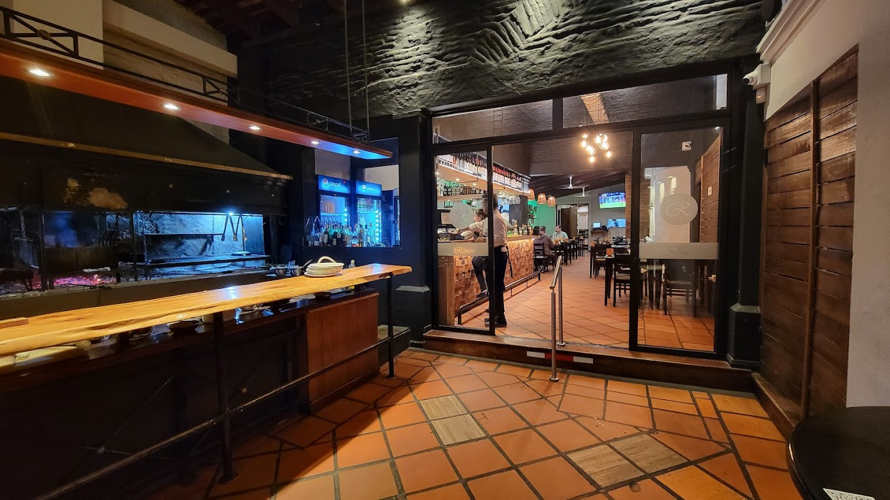
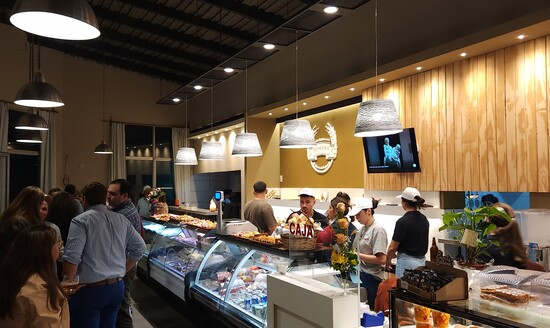

¿Quienes somos?
Parrilla "Lo de Romero" es el segundo eslabón de una cadena de locales gastronómicos en
Paysandú, derivada de la exitosa idea original que es "Pastería Romero". Esta última comenzó en el año
2017,ubicada en la esquina de las calles Montecaseros y Charrúas, convirtiéndose rápidamente en un
referente en la elaboración y venta de pastas caseras de excelente calidad, así como una amplia variedad
de platos elaborados.
En agosto de 2023, se inauguró "Romero Tienda Gourmet" en la Avenida República Argentina y
Solano García, un punto estratégico en el ingreso a la ciudad de Paysandú. Esta tienda ofrece un
espacio moderno y confortable, donde además de toda la línea de productos Romero, los clientes pueden
disfrutar de platos de rotisería, parrilla, postres, productos para celíacos y una variedad de artículos
de excelente calidad y marcas reconocidas.

Nuestros servicios
Parrilla “ Lo de Romero” es un restaurante ideal para los amantes de los diferentes platos
de pastas, carnes y pescados.
El local ofrece tres ambientes cálidos e informales, sumados a la ideal iluminación y a los
toques de color que brindan las plantas ornamentales.
Un capitulo aparte para el patio exterior, único, rodeado de una exuberante vegetación ideal
para las tórridas jornadas del litoral uruguayo.

Locales
Fábrica de Pastas: Nuestra fábrica de pastas es el corazón de la operación
de
Romero. Aquí es donde elaboramos nuestras pastas frescas con los mejores ingredientes y
utilizando
técnicas artesanales para garantizar la calidad y el sabor excepcional en cada producto que
ofrecemos.
Rotisería: En nuestra rotisería, ofrecemos una selección de platos
preparados y
listos para llevar, incluyendo opciones de pasta, guarniciones, ensaladas y más. Nuestros
clientes
pueden disfrutar de la conveniencia de llevar a casa comidas deliciosas y caseras sin tener
que
preocuparse por cocinar, todo preparado con el mismo cuidado y atención al detalle que
ponemos
en nuestros productos frescos